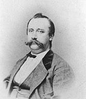

Hoewel we, zoals
elk jaar overigens, straks weer geconfronteerd zullen worden met
de – uiteraard weer eens naar boven – aangepaste posttarieven,
blijft uw ledenbijdrage voor 2017 ongewijzigd. Ze beloopt voor het
in mei 2017 te verschijnen nieuwe Jaarboek De Nederlanden ‘extra muros’ en
voor de driemaandelijkse Nieuwsbrief
Zannekin 29 €.
Vanaf 35 € wordt u met dank als steunend lid geboekt.
Maakt u bij
voorkeur gebruik van ons ‘Belgisch’ zogenaamd ‘Europees’
rekeningnummer ibanBE13 4648 2202 5139 – bic: KREDBEBB BE, waarvan de
rekeningoverzichten ons dagelijks meegedeeld worden. Bijliggend
betaalformulier kan u daarbij dienstig zijn. Leden genieten bovendien ook
een tastbare vermindering op de deelnamekosten van de Zannekin-activiteiten.
De
bibliotheek van de Franse Nederlanden De Katholieke Universiteit Campus Kortrijk
bezit met betrekking tot de geschiedenis van Frans-Vlaanderen twee
heel interessante collecties: de Bibliotheek de Franse
Nederlanden en het Archief van de Franse
Nederlanden. Beide collecties voeren terug op de
figuur van de Frans-Vlaamse priester Jean-Marie Gantois. Gantois
was de voorman van de regiona-listische beweging in
Noord-Frankrijk. Na zijn dood werd zijn bibliotheek in 1969 op
aanbeveling van toenmalig adjunctbibliothecaris Eric Defoort en
met de medewerking van de Ieperse Vereniging Zannekin, door de
bibliotheek K.U.Leuven Campus Kortrijk verworven.
De Bibliotheek de Franse
Nederlanden bevat in de eerste plaats een omstandige
collectie boeken en tijdschriften betreffende de geschiedenis en
de literatuur van Frans-Vlaanderen. De nadruk van de verzameling
ligt duidelijk op de historische en culturele verbondenheid van
Vlaanderen met Noord-Frankrijk in de ruime betekenis van het
begrip. In die zin reikt de bibliotheekcollectie veel verder dan
werken over het gebied van de Franse Westhoek. Zo toont de
bibliotheekcollectie een mooie doorsnede van de literatuur die
voorhanden is met betrekking tot het grondgebied ten noorden van
de Somme. Tot op heden wordt de bibliotheekcollectie vanuit
dezelfde ruime invalshoek aangevuld.
In het Archief van de Franse
Nederlanden hebben de meeste documen-ten betrekking op
de inzet van J.-M. Gantois in de Frans-Vlaamse regionalistische
beweging. De nadruk ligt bijgevolg op vraagstukken rond volk en
identiteit. Het betreft briefwisseling, documentatie over
gelijkaardige bewegingen (Bretoens regionalisme), documenten
allerhande over (culturele) Vlaamse verenigingen in
Noord-Frankrijk en Vlaanderen (vooral voor de periode 1900-1960).
Het archief bevat onder andere een selectie uit het archief
Lemire. Bijzonder interessant is de reproductie op microfilm van
de Franse politierapporten (1925-1935) uit de Archives
Départementales du Nord. De verslagen geven een duidelijk beeld
van de houding van de Franse overheid ten aanzien van het
Frans-Vlaams regionalisme en bieden een staalkaart van het
flamingantisme in Noord-Frankrijk. Eveneens uit de departementale
archieven werden alle documenten verzameld betreffende het
toezicht op het religieus onderricht in Noord-Frankrijk. Officieel
moest dit in het Frans worden gegeven, maar in tal van gemeentes
(Killem, Bambeke, Gode-waarsvelde, …) bleef de voertaal het
Vlaams. Omstreeks 1900-1903 ontstond in Killem rond deze kwestie
een conflict hetgeen een grote weerslag had in de pers en bij de
lokale bevolking.
________________
Bron:Nieuwsbrief
Davidsfonds Frans-Vlaanderen, oktober 2016. De vereniging
organiseerde op 8 oktober 2016 een bezoek aan de bibliotheek en
het archief De Franse Nederlanden. Binnen dit archief wordt
overigens ook het archief van de Vereniging/Stichting Zannekin bewaard.
Een
Fries reist door de Nederlanden in Frankrijk Wido Bourel

175 jaar geleden, op 12 september 1840,
werd de Friese taalkundige en dialectoloog Johan Winkler
(1840-1916) geboren.
Zijn boek Oud Nederland, in 1888 in
Den Haag uitgegeven, heeft in mijn bibliotheek een ereplaats
gekregen.
In dit werk beschrijft Johan Winkler taal
en volkeren van de oude, historische Nederlanden van Friesland tot
de Nederlanden in Frankrijk en in Duitsland.
Zeer wetenswaardig is het relaas van zijn
reis naar Frans-Vlaanderen in 1887. Johan Winkler maakt een unieke
samenvatting van de situatie van land, volk en taal op het eind
van de 19e eeuw. Toen kon men in Duinkerke, Sint-Winoksbergen,
Hazebroek, Belle, Watten, allemaal steden die Johan Winkler
bezocht, nog gezellig vertoeven zonder een woord Frans te spreken.
In de streek
van Kales sprak men….
Iedereen heeft dezer dagen de mond vol van
de havenstad Calais, Kales in het Nederlands. Over de streek van
Kales schrijft Johan Winkler het volgende: ‘Nog ten huidigen
dagen (1887!) spreken de dorpelingen, de boeren en de arbeiders,
die in Artesië langs de zeekust wonen, tussen Kales en Bonen
(Calais en Boulogne sur mer) tot aan het rivierke de Canche en
tot kaap Wittenes (Blanc nez zeggen de Fransen, Whiteness de
Engelsen), hun Oud-Diets, hun Oud-Vlaams, hun oude landseigene
goudspraak van het Nederlands. Een oud-Nederlander, een waar
vaderlander en tevens een verdienstelijk geschied- en
taalvorser, de heer G.P. Ross die in deze streek woont, meldt
ons enige nadere bijzonderheden van die hedendaagse Dietse
volksspreektaal langs de kust van Artesië (…)
De streek van Kales nog Diets op ’t
eind van de 19e eeuw, aldus het getuigenis van een Fries
taalgeleerde. Men zegge het voort aan onze Vlaamse en Nederlandse
pers!
Omtrent
het Walenland De kijk
van de Baarle-werkgroep
Uitgelicht: Wallonië en de Baarle Werkgroep
Voor de Baarle werkgroep is het probleem
België, niet Wallonië. Wij stappen niet mee in een klimaat van
wederzijdse verdachtmakingen en onbegrip tussen de twee naties
Vlaanderen en Wallonië en de pogingen van België om deze twee
naties tegen elkaar uit te spelen. Het Waalse volk is een bevriend
buurvolk. Het verdwijnen van België betekent voor ons niet het
doorknippen van alle banden met Wallonië, maar integendeel een
politieke volwassenwording die noodzakelijk is om échte
vriendschappelijke banden te creëren. Eventueel, zelfs in een
confederale Nederlanden.
Historische banden
Er bestaat ontegensprekelijk een
historische en culturele band tussen Vlaanderen en Wallonië. Dat
is niet alleen een 'Belgisch' gegeven, maar was al het geval in de
Middeleeuwen. Historisch heeft Wallonië meer een verwantschap met
de Lage Landen dan met Frankrijk. Niettemin kunnen we vandaag
spreken over twee naties met een duidelijke eigen identiteit;
Vlaanderen en Wallonië zouden in elk ander 'federaal' land gelden
als twee volwaardige deelstaten. Alleen heeft België, en de
belgicistische elite, deze dubbele identiteit steeds genegeerd of
grofweg ontkend. Net in het ontkennen van het eigen karakter van
Vlaanderen en Wallonië ligt een van de drama's van de Belgische
staat, door dit ontkennen kan ze, ironisch genoeg, de twee
volkeren voortdurend tegen elkaar uitspelen in een mank draaiend
staatsverband dat voor federalisme moet doorgaan (maar het
eigenlijk niet is wegens het ontbreken van echte deelstaten). De
Baarle werkgroep erkent ondubbelzinnig het eigen karakter van
Wallonië en Vlaanderen als nationale identiteiten, maar merkt ook
op dat er tussen die twee naties een eeuwenoude band is, die past
in de context van de Lage Landen. De agressieve
verfransingspolitiek die sinds 1830 in de Belgische staat werd (en
nog steeds wordt) gevoerd vormt echter een obstakel voor de goede
verstandhouding tussen Vlaanderen en de Franstalige/Waalse wereld
in de Lage Landen. Indien Wallonië de banden met Vlaanderen op een
vriendschappelijke manier wil aanhouden, zal het moeten ophouden
met het verlenen van steun aan die politieke krachten die actief
de verfransing van Vlaamse gemeenten en gebieden nastreven. Een
Vlaams-Waalse verzoening en eventuele samenwerking op gelijke voet
moet ook een erkenning impliceren van de culturele genocide die de
Francofonie anderhalve eeuw lang heeft proberen uitvoeren op het
Nederlandstalige deel van de zuidelijke Nederlanden. Pas wanneer
de verfransingspolitiek aan banden gelegd wordt kan er een goede
verstandhouding zijn tussen Vlaanderen en Wallonië. Dit zou zowel
een verderzetting van historische banden als een breuk met een
historische ontwikkeling betekenen.
Het Waalse drama
1830 was een ramp voor Vlamingen, maar niet
minder voor Walen. Wallonië werd een economisch wingewest van de
Belgische elite in Brussel. Net als in Vlaanderen kwam in Wallonië
een agressieve verfransing op gang, maar in tegenstelling tot
Vlaanderen kon Wallonië deze verfransing niet stuiten. De Waalse
en Picardische volksdialecten (die géén Franse dialecten zijn)
werden zwaar in de verdrukking gebracht. De redenen hiervoor zijn
tweeërlei: allereerst had Vlaanderen de passieve en soms actieve
culturele steun van de grote Noord-Nederlandse broer. Het bestaan
van een soevereine en welvarende Nederlandstalige natiestaat heeft
de Vlaamse emancipatie kracht bij-gezet. Hoewel er wel een
particularistische stroming bestond in Vlaanderen, bleek het
prestige van Nederland groot genoeg om de strijd voor een
gezamenlijk algemeen Nederlands in Vlaanderen succesvol te
ondersteunen. Wallonië heeft zulke steun nooit gehad, er bestond
geen economische en/of politieke macht die het Waals kon
beschermen tegen de verfransing. Een tweede reden voor de
succesvolle verfransing van Wallonië was de opkomst van de door de
Brusselse bourgeoisie beheer-de industrie, die vele Waalse
arbeiders werk verschafte (de Vlaamse economische opleving kwam
pas later; voor de doorsnee Vlaming was het Frans aanvankelijk
niet meer dan een bestuurstaal, er hing niet direct een economisch
voordeel aan vast tenzij hij naar Wallonië emi-greerde). Gedurende
een goede anderhalve eeuw werd het Waals quasi volledig uit de
politieke, ambtelijke, academische en economische sfeer
verdrongen. In tegenstelling tot Vlaanderen was er geen actieve
Waalse beweging om hier tegen in te gaan. Op cultureel vlak was er
dus een genocide die veel succesvoller was dan die in Vlaanderen,
maar ook op sociaaleconomisch vlak werd Wallonië volledig onder
het bestuur van een vreemde elite geplaatst, namelijk de Brusselse
francofone bour-geoisie. De macht van de Brusselse elite betekende
voor Wallonië aan-vankelijk een economische opleving, maar na de
Tweede Wereldoorlog ging het snel bergaf. Terwijl Vlaanderen tot
bloei kwam liet de Brusselse bourgeoisie Wallonië en haar
verouderde industrie vallen als een baksteen, waarmee de nog
steeds voortdurende afhankelijkheid van Wallonië pijnlijk
duidelijk werd. De regio werd een sociaal kerkhof, waar
cliëntelisme en corruptie nu welig tieren. De schuld van deze
malaise kan niet bij de Walen zelf gelegd worden (wat emotionele
flaminganten te vaak doen) maar is volledig toe te schrijven aan
de nalatigheid van de Belgische staat en de elite die in die staat
de plak zwaait. Een economische en culturele heropleving van
Wallonië kan bij-gevolg enkel tot stand komen als de Belgische
staat eindelijk opgedoekt is. Brussel en België zijn nu nog steeds
de grootste rem op de Waalse ontwikkeling, omdat Wallonië zichzelf
afhankelijk blijft stellen van Brussel. De Vlaamse of
Vlaams-Nederlandse beweging moet die ten-densen in Wallonië
aanspreken die de Waalse afhankelijkheid van Brussel in vraag
stellen. België houdt de politieke volwassenwording
tegen
Als men de commentaren van Belgicisten er
op naleest krijgt men de indruk dat de communautaire problemen toe
te schrijven zijn aan eng-geestig en bekrompen nationalisme van de
'extremistische' flaminganten. In de Vlaamse publieke opinie is de
Waal een corrupte luierik, in de Waalse opinie is de Vlaming een
onverdraagzame egoïst. Deze vooroordelen steunen nergens op en
zijn in wezen ronduit racistisch, men moet zich dus de vraag
stellen waar ze vandaan komen. Belgicisten wijzen uiteraard met de
vinger naar de Vlaamse en de Waalse 'extremisten'. Men zou hun op
het eerste zicht ook gelijk geven. Maar dan houdt men geen
rekening met een fundamentele factor: elke communicatie, elk
nieuws dat wordt verspreid tussen Vlaanderen en Wallonië, gaat
langs de Belgische (Brusselse) kanalen. Er bestaat hoegenaamd geen
rechtstreekse communicatie tussen Vlaanderen en Wallo-nië, niet op
staatkundig vlak waar alles langs de federale regerings-niveaus
wordt geregeld, en evenmin op het civiele vlak, behalve mis-schien
enkele unitaristische middenveldorganisaties zoals de vakbon-den
(en zelfs daar hebben we onze bedenkingen bij; ook in het
midden-veld wordt alle communicatie via de Belgische kanalen
gefilterd). Als er al vooroordelen en communautaire antagonismen
zijn ontstaan, zijn ze net ontstaan dankzij de Belgische
'eenheid', niet ondanks. De vooroordelen en de antagonismen zouden
wellicht verdwijnen als Wallonië en Vlaanderen op een volwassen en
onafhankelijke manier met elkaar zouden gaan communiceren, maar
dat zou dan ook per definitie het einde van België als
tussenpersoon betekenen, dus het einde van België als staat. En
omgekeerd, als de 'tussenpersoon' België zou verdwijnen, zouden de
relaties tussen Vlaanderen en Wallonië wellicht veel positie-ver
worden. Pas na een onafhankelijkheid kunnen Wallonië en Vlaanderen
echt bevriende volwassen naties zijn. De Baarlewerkgroep pleit
voor een rechtstreekse dialoog tussen Vlaanderen en Wallonië,
zowel op politiek niveau als op niveau van de burgers. Hiervoor
hebben we in de eerste plaats politieke leiders nodig die niet
meer namens België maar namens Vlaanderen in gesprek gaan met
Wallonië. Daarnaast moet Vlaanderen een concrete visie op Brussel
en Wallonië ontwikkelen en een aanbod aan de Waalse burgers doen.
De plaats van Wallonië in de Lage Landen
Voornamelijk door de verfransingspolitiek
van Brussel is Wallonië zijn aandacht meer gaan vestigen op de
Franse cultuur en het prestige van Parijs. Dat verklaart meteen
ook het bestaan van een rattachistische stroming in Wallonië, die
eigenlijk historisch gezien onnatuurlijk is. Er bestaat echter ook
nog steeds een eigen Waalse identiteit (en er bestaat ook nog
steeds een Waals-nationale beweging). In heel wat opzichten is
Wallonië nog steeds een deel van de Lage Landen. De Baarle
werkgroep ziet voor Wallonië daarom nog steeds een plaats
weggelegd in een confederatie van de Nederlanden, al is de
beslissing natuurlijk aan Wallonië zelf. Indien Wallonië zou
kiezen voor deelname aan de confederatie van de Lage Landen,
zullen de verhoudingen heel anders liggen. Uiteraard zal Wallonië
veel meer dan in het Belgische unitarisme van vandaag de
mogelijkheden krijgen om zichzelf te ontplooien. Wallonië zal als
entiteit ook veel sterker staan binnen de Lage Landen dan binnen
een vereniging met Frankrijk, waar Wallonië met grote
waarschijnlijkheid zal gedegradeerd worden tot een departement
'noord Frankrijk'. We hoeven er maar aan te herinneren wat er met
de andere volkeren op Frans grondgebied gebeurd is (Bretagne,
Corsica, Occitanië, noord Baskenland, ...), het lijkt ons weinig
waarschijnlijk dat Wallonië anders behandeld zal worden. Binnen
een context van de Lage Landen zou Wallonië wel een volwaardige
partner zijn, en zouden de relaties met Vlaanderen ook veel
directer en vriendschappelijker zijn. Als volwaardig lid van de
Lage Landen zal Wallonië ook de garantie van taalrechten hebben op
het eigen grondgebied. Zo Wallonië dat wenst kan het Frans (of
zelfs het Waals) de eerste bestuurstaal van de staat Wallonië
zijn. Er kan zelfs gewerkt worden aan een overlegorgaan waar elke
taalgemeenschap aanwezig op het grondgebied van de confederatie
vertegenwoordigd wordt (ook onder meer Duits en Fries). De
hoedanigheid en de bevoegdheid van dit orgaan moet dan tussen de
deelstaten worden onderhandeld. Wallonië zal echter wel moeten
rekening houden met het overwegend Nederlandstalige karakter van
de confederatie. Dat betekent dat er geen plaats meer is weggelegd
voor Fransdolle arrogantie en dat de Franstalige
vertegenwoordiging in de staatsstructuur ook navenant zal zijn.
Dat betekent geen verneder-landsing van Wallonië (dat is
allerminst een doelstelling van de Baarle werkgroep) maar dat
betekent wel het einde van het Frans als domi-nante taal in de
hogere niveaus van de staatsstructuren.
Conclusies en aanbevelingen
De Baarlewerkgroep pleit kort samengevat
voor een rechtstreekse toe-nadering tussen Vlaanderen en Wallonië,
zonder België of de Brusselse elite als tussenpersoon.
Rechtstreekse toenadering betekent een verdie-pen van de relatie
tussen Vlaanderen en Wallonië als bevriende buur-naties, maar
daarmee ook ironisch genoeg het einde van de 'Belgische eenheid'.
Concreet bevelen we de Vlaamse beweging en de Vlaamse (politieke)
wereld in het algemeen aan om:
1. Een zo concreet mogelijke en coherente
visie uit te werken over de toekomstige relaties tussen Vlaanderen
en Wallonië.
2. Met deze visie als uitgangspunt naar de
Waalse politici, midden-veldorganisaties én burgers te stappen.
3. Actief die tendensen in Wallonië op te
zoeken en te ondersteunen die een pro-Waalse en anti-Belgische
visie hebben.
4. Een burgertendens- of beweging in gang
te zetten die de rechtstreekse dialoog tussen Vlamingen en Walen
promoot, dus zonder Belgische tussenpersoon. Dit kan op vlak van
culturele activiteiten, midden-veldwerking, nieuwe media en debat.
____________________
Bron: Stichting Baarle Werkgroep Nieuwsbrief nr.
22 – maart 2014 15 / 17
Overwegingen
bij de bijdrage "Gemiste kansen" in Nieuwsbrief 4/2016 Ik vind het een goed artikel over een stuk
historie dat mensen uit onze kringen vanzelfsprekend bekend is.
Wel vind ik dat de auteur nogal snel heen
stapt over het “geval” Karel de Stoute en weinig plaats besteedt
aan het belang van zijn mislukking. Stel dat hij als overwinnaar
uit de strijd was gekomen en het Middenrijk, of alvast een groot
stuk er van (Lotharingen), had kunnen inlijven. Frankrijk en
Duitsland zouden dan niet aan elkaar gegrensd hebben en zijn Rijk
zou een machtig blok tussen en tegenover de twee andere opposanten
gevormd hebben. Met als bijkomend voordeel dat dit Rijk altijd in
staat zou geweest zijn de balans in een of andere zin te doen
overhellen. Kunt ge voor u zelf de Europese geschiedenis eens in
die zin “herschrijven”?
In zijn uitvoerige behandeling van de
opstand der Nederlanden tegen Spanje in de 16/17e eeuw heeft hij
het meermaals over “weer een ge-miste kans”. Persoonlijk zou ik
die opstand in zijn geheel als één gemiste kans beschouwen.
Bovendien vind ik dat hij – de auteur - nogal hard oordeelt over
de figuur van Maurits van Nassau, die wel wat over-dreven wordt
voorgesteld als een houwdegen, onverdraagzaam en niet
breeddenkend. Johan van Oldenbarnevelt een “voorstander van de
vrede”? Jawel, dat zal wel. Maar het was hem vooral te doen om
eigenbelang. Maurits haalde vooral zijn steun bij de meer
oostelijk, zeg maar: de armere landelijke gebiedsdelen, terwijl
van Oldenbarnevelt de man was van de rijke, aan de Noordzee
gelegen handelssteden (Holland en Zeeland) met hun grote vloot.
Hij wilde handel drijven, dit wil zeggen: geld verdienen, en om
dat te kunnen moest er natuurlijk eerst vrede komen. Om dat te
bereiken wilde hij veel doen, zelfs in opstand komen tegen Maurits
en … de idee van de eenheid van de Nederlanden opgeven. Volgens
mijn bescheiden mening was zijn veroordeling dan ook terecht (voor
dit oordeel steun ik mij hoofdzakelijk op een cursus van Prof. dr.
Etienne Rooms). En dan tenslotte rest er ons de kansen die 1815
ons geboden heeft, maar die we inderdaad ook dan weer in 1830
lichtzinnig verkwanseld hebben. Ook hier gaat de auteur wat al te
bondig over heen. Geen woord over de dromen die Willem l op een
gegeven moment koesterde: de aanhechting van de gebieden in
Noord-Frankrijk (o.a. Frans-Vlaanderen en Artezië) die ons door de
Fransen in de loop der tijden werden ontroofd, meer concreet: het
“herstel” van de z.g. Vauban-linie en zelfs de hoop dat hij
opnieuw zijn voorvaderlijk territorium Nassau zou in handen
krijgen. Kunnen wij ons dat Rijk voorstellen? Inderdaad, niet meer
dan een droom, want het lag voor de hand dat de andere grote
mogendheden dit niet zouden dulden. Zat de grote “verslagene" niet
mee aan tafel in Wenen? Een stukje diploma-tische handigheid van
Talleyrand! Maar zelfs die droom verdiende in het stuk een beetje
meer aandacht.
Vik Eggermont
Bij de
kaft-illustratie Zojuist
is de derde druk (!) van Histoire de la Flandre
van onze vriend Eric Vanneufville bij de Bretoense uitgeverij
Yoran verschenen. In dit boek schreef Wido Bourel over de
geschiedenis van de Nederlandse taal onder de titel “Petite
histoire et actualité de la langue des Flamands”. Meer
informatie op de webstek van de uitgever: http://www.yoran-embanner.com/histoire/35-histoire-de-flandre.html Référence ISBN
978-2-914855-82-2 – prijs: 12 €. Genaaid, 11 x 17, 379
pp., met talrijke kaarten en illustraties,
Uit en over Frans-Vlaanderen Cyriel Moeyaert &
Mark Ingelaere
oEUVO zorgde weer voor nieuwe
huisnaamborden. In Sint-Jans-kappel verlangde Dominique Degroote
een eerder Nederlandse naam: “Lisbloemenhuis”. Frans-Vlaams zeggen
ze lisjbloeme (iris). In Sint-Winoksbergen was het bord “bij de
Geschiedschrijver” bij Robert Noote aan vernieuwing toe. Hij woont
vlak bij de schilder-achtige Kaaipoorte. In Bavinkhove bij
Benjamin Lyoen lezen we: ”Tussen Berg en Moeras”, op een mooi
gerenoveerd oud huis. In Berten kreeg de Brasserie van de familie
Druon-Tops de toepas-selijke naam “Kasteelvijver” bij een heuse
vijver. Op 30 meter van de Deschodtmolen in Wormhout woont Hervé
Maes nu in “Het huis van de kleine Maes”. Onze zeer Vlaamse
vriendin en leeftijd-genote Denise Becue woont in nr. 1 aan de
Romeinse Heerweg in Krochte. Haar huis heet nu “De Niepe Hoek”, de
naam van de wijk en van de daar verdwenen herberg. Niepe komt van
den Iep (of olm). Charlotte Debroucke in Wormhout woont nu
gelukkig in “Het voorouderlijk Huys”, een heel zinvolle naam. Ze
is jammer genoeg sindsdien gestorven.
oHorst van Cuyck publiceerde De Graaf en De Heilige
Eustaas en Ida van Boulogne. Een rijk geïllustreerd boek van
64 bladzijden. De moeder van Eustaas was Mathilde van Leuven
kleindochter van Karel van Lotharingen, de laatste mannelijke
afstammeling van Karel de Grote.
Eustaas was afstammeling van Judith, gehuwd met Boudewijn I en
achterkleindochter van Karel de Grote. Dat Ida in Bouillon geboren
zou zijn is niet zeker: het is een veronderstelling (Ducatel, Vie de Sainte Ide de Loraine,
16, voetnoot 1). De auteur vermeldt niets over de taal van Ida.
Daar heb ik meer aandacht voor in m’n artikel Een Dietse abdij in het
graafschap Gizene in het voorlaatste jaarboek ‘De
Nederlanden extra muros’ (2014).
oHet museum van Sint-Winoksbergen
organiseert het jaar door voor-drachten over lokale geschiedenis
en kunst. Op 3 april gaf Kristof Papin er een voordracht over het
15e-eeuwse Sint-Winoksbergen. Het grootste Nederlandstalige
archief van Frans-Vlaanderen in deze stad is heel rijk en een
goudmijn voor genealogen en historici. Voor meer info over het
programma en de vaste collectie www.musee-bergues.fr.
(K. Papin). Hopelijk wordt z’n voordracht ergens gepubliceerd.
oIn de Mémoires van de Antiquaires
de la Morinie (IX, 1851) ontdekte ik het bestaan in het
archief van Sint-Winoksbergen van een hand-schrift Dictionarium – biglotton
geographicumLatino-Belgicum et Belgi-co-Latinum,
(Latijns-Nederlands en Nederlands-Latijns) gemaakt door de
prior van Sint-Cecilia Frederick Codron in Diksmuide (1770). Het
was blijkbaar bestemd voor het onderwijs en misschien aanwezig in
het Sint-Winokscollege.
oHet nieuws hierover verheugde Hugo de
Schepper die een boek gepubliceerd heeft over het algemeen
Nederlands bewustzijn in de Nederlanden: Belgium dat is Nederlandt,
Identiteiten en identiteitsbesef in de Lage Landen, 1200-1800. Het
is een rijk geïllustreerde uitgave op albumformaat, met kaarten en
foto’s allerhande in betrekking met de inhoud. 128 blz. boeiende
historische inhoud. Uitgeverij Papieren Tijger, Breda. Hugo de
Schepper is heel blij met historische blijken van Nederlandse
identiteit in Frans-Vlaanderen zoals boven vermeld geografisch
woordenboek.
oVan Hugo de Schepper ontving ik volgende
informatie over een speciaal tweetalig (Frans-Engels) nummer, Collection Histoire de la
Revue du Nord, No 30: L’identité
au pluriel. Jeux et
enjeux des apartenances des Anciens Pays-Bas, XIVe – XVIIIe
siècles. Identity
and identities. Belonging at Stake in the Low Countries, 14e-18e
Centuries.
oNadat ik in korte tijd drie goede
Nederlandse vrienden verloren had: Luc Verbeke, Luc Vranckx en
Piet Paardekooper, is me nu ook een Frans-Vlaams vriend ontvallen
waarmee ik geregeld brieven wisselde: kanunnik Michel Spanneut uit
Steenvoorde, professor en was decaan van de Faculteit Wijsbegeerte
en Letteren geweest aan de Katholieke Faculteiten in Rijsel. Hij
was in Steenvoorde geboren op 6 november 1919 en is in Rijsel
gestorven op 3 mei 2014. Hij sprak niet alleen goed Vlaams maar
kende ook goed Nederlands. Hij heeft voor een paar jaar een Vlaams
toneelstuk besproken dat ontdekt was op de pastoriezolder van
Morbeke: Arlequin, Wildeman.
Zie m’n lexicon hierover in het Jaarboek de Franse
Nederlanden (nr. 36, 2011)
oFrank Masschelein sprak met de heer
Maillet, leider van de Frans-Vlaamse actiegroep Tweetalen. Deze
actiegroep heeft als doel een tweetalige bewegwijzering in dorpen
en steden, ook van wijk- en straatnamen. Ze verlangen ook
tweetaligheid in de gemeentehui-zen. De petitieactie hiervoor op
internet werd al door 600 mensen ondertekend. De groep Tweetalen
bestaat uit 50 doorgaans jonge mensen, al dan niet studenten. Ze
zijn voorstander van Nederlands in Frans-Vlaanderen maar willen
ook dat dat Frans-Vlaams behouden blijft.
oVan Alaan Delepeleire ontving ik een
brochure over de verdwenen vrouwelijke abdij Marquette gelegen aan
de samenvloeiing van Marque en Deule ten noorden van Rijsel. Ze
werd in 1228 gesticht door Johanna gravin van Vlaanderen, gehuwd
met Ferrand van Portugal. Ze werden er later allebei in begraven.
De brochure brengt verslag over de fundamenten van die abdij die
blootgelegd en onderzocht werden. Het was een bloeiende abdij
gebleven tot aan de Franse Revolutie. Bovengronds werd alles 1794
vernield behalve een monumentale poort die pas een tijd geleden
afgebroken werd omdat die bouwvallig was. Wordt die abdij of de
poort nu weder-opgebouwd?
oIJzerhoek bestaat 25 jaar. Dat werd
herdacht en gevierd op zondag 22 juni in Volkerinkhove. Onder de
spreekbeurten werd er ook een in het Frans-Vlaams gehouden. De
feestrede hield Erik Vanneufville over de geschiedenis van
Vlaanderen, een spreekbeurt die altijd boeiend en leerzaam is.
IJzerhoek is bloeiend, heeft vrij veel leden, geeft een mooi
tijdschrift uit met telkens een Frans-Vlaams verhaal, organiseert
heel wat activiteiten voor het behoud van het Vlaamse erfgoed en
helpt het Vlaams herleven. We wensen het nog veel voorspoedige
jaren
oHet boek van Erik Vanneufville Le front Flamand 1214-1328,
de Bou-vines à Cassel heb ik geboeid gelezen. Het is
verhalend geschreven zoals goede historieboeken moeten zijn en
brengt veel onbekende of minder bekende details aan het licht.
Vanaf de nederlaag bij Bovingen (Bouvines) in 1214 over de
overwinning bij Kortrijk in 1302 tot de nederlaag met Zannekin bij
Kassel in 1328, met alles wat er tussendoor gebeurd is. Het boek
werd geschreven in Vlaamse geest.
Vanaf de zijlijn Marten Heida
Post uit Duinkerke
Sinds enige tijd krijg ik post uit deze
Frans-Vlaamse havenstad. Ze wordt mij toegezonden door een
organisatie die zich noemt: “Komitee ter eerbiediging der
Vlamingen”. Het wil opkomen voor de taalrechten van de
Vlaamssprekende bevolking in deze regio. Terecht wordt gesteld dat
Vlaamse burgerschap een persoonlijke zaak is. Maar dat wordt door
de Franse overheid niet erkend. Tegen deze achtergrond heeft het
zich in mei 2016 gericht tot de voorzitter van de in Rijsel
zetelende Regionale Raad. In hun schrijven beklagen ze zich over
het feit dat van hen gevraagd wordt dat ze als Vlamingen niet
bestaan. En dat terwijl ze op het internationale vlak erkend en
gerespecteerd worden. Ze tekenen dan ook protest aan tegen de
politiek van de Franse overheid met be-trekking tot de huisvesting
van grote aantallen migranten in hun streek. Dat zou tot gevolg
kunnen hebben dat zij als Vlamingen moeten integreren. Deze
situatie vergelijken ze met de kolonisering zoals die zestig jaar
geleden nog voorkwam in Algerije.
Uit het schrijven wordt duidelijk dat twee
partijen in de Regionale Raad eenstemmig hebben geweigerd het
Vlaams als regionale taal te erken-nen. In dit verband brengen ze
de voorzitter onder het oog dat “onze kinderen niet weten dat ze
Vlamingen zijn en ook niet op de hoogte zijn van de geschiedenis
en de taal van Vlaanderen”. Wel moeten ze kennis nemen van de
namen van hen die zich verzet hebben tegen het facisme.
Bij dit beroep op één van de leidinggevende
politici in hun regio hebben ze het niet gelaten. Zo is er onder
meer een schrijven gericht aan de Duitse Bondskanselier Angela
Merkel. Ze stellen haar op de hoogte van hun onderdrukking door de
Franse overheid. Immers hun elementaire verzoeken zijn geweigerd
omdat ze als Vlamingen niet bestaan voor de Franse wet. “Het
onderwijs en het gebruik van onze originele taal –het Vlaams en
haar moderne vorm het Nederlands – zijn verboden.” Op Merkel wordt
een beroep gedaan deze respectloze opstelling van de Franse
overheid ter sprake te brengen in haar contacten met de
verant-woordelijke machthebbers.
In het bovenstaande heb ik getracht weer te
geven wat er vanuit Duin-kerke aan activiteiten ten behoeve van
Frans-Vlaanderen wordt onder-nomen. Ze getuigen ervan dat een
nieuwe generatie bezig is zich bewust te worden van de Vlaamse
eigenheid. Ik kan me daar – staande op de zijlijn – over
verheugen.
Maar ik blijf wel zitten met een tweetal
vragen. De eerste is: in hoeverre vindt deze nieuwe werking
weerklank bij de bevolking; en als dat het geval is: slaagt men er
dan in die te overtuigen van de noodzaak in actie te komen? De
tweede vraag houdt met die laatste kanttekening nauw verband. Is
de heer Triquet – de woordvoerder van deze hernieuwde werking –
een roepende in de woestijn of weet hij zich omringd door een
krans van medestanders. Als dat het geval is dan versterkt dat hun
stem van aanklacht. Maar mocht blijken dat het niet meer is dan
een één-mans-zaak dan zal hij noodgedwongen die roepende moeten
blijven. Om hem een bemoedigende riem onder het hard te steken
laat ik hier zijn adres volgen: Wido M. Triquet, MF-BV, 5 reu
Jacques Bin-gen, F 59140 Dunkerque/Duinkerke. Wellicht put hij
moed uit eventuele reacties om op de ingeslagen weg voort te gaan.
Marten Heida.
Prins Willem Alexanderpark 53, NL 3905 CB
Veenendaal
Het
laatste woord Leo Camerlynck
Nederlands in de grensregio’s
Een heel interessant bericht
van de Taalunie blokletterde het volgende: “De meerwaarde van
buurtaalonderwijs in de grensregio”.
We lichten er een uittreksel
uit. “Er zijn maar liefst
400.000 leerders van het nederlands
in de grensgebieden. De positie van het nederlands is daar
enorm belangrijk. En dus worden in deze regio’s veel
initiatieven en activiteiten ontwikkeld ter ondersteuning van
het onderwijs Nederlands.
In het Engels kun je
elkaar verstaan. Maar door het spreken van elkaars landstaal
leer je elkaar echt te begrijpen. En dat maakt het grote
verschil. Door de taal van je buur te spreken heb je meer
inzicht in de cultuur, omgangsvormen en begrip en finesses van
de taal. De grensgebieden zijn de Federatie Wallonië-Brussel,
Noord-Frankrijk, Noordrijn-Westfalen en Neder-saksen.” Tot zover het uittreksel
uit het bericht.
Ter
info, de Nederlandse Taalunie gebruikt de officiële benamingen
voor de grensgebieden van het Nederlandse taalgebied. Zannekin gebruikt de
historische benamingen, zijnde de Franse Nederlanden, het
Walenland, de Duitse grensgebieden, en zonder Luxemburg te
verge-ten. Buiten deze kleine toelichting en los daarvan mag dit
Taalunie-bericht als een hoopgevend feit en zelfs signaal worden
beschouwd.
De
toestand in Duitsland blijkt beter te zijn dan in de
Zuidelijkste Nederlanden. Dat valt te verklaren door het feit
dat het Duits en het Nederlands beide West-Germaanse nauw
verwante talen zijn. Spraak-kundig valt het voor een Duitstalige
makkelijker Nederlands te leren dan omgekeerd. Er zijn echter
twee schaduwzijden. Ten eerste valt het op dat de jonge
Nederlander (en Vlaming) jammer genoeg steeds minder Duits kent
en leert. Ten tweede, te pas maar vooral te onpas wordt onder
jongeren hoofdzakelijk in het Engels geconverseerd.
De
kennis van het Nederlands bij de Franstaligen neemt toe maar
minder ingrijpend dan verhoopt. Naast het toenemend aantal
Waalse scholen, die het Engels als tweede taal kiezen, kiezen
steeds meer Waalse en Franstalig Brusselse scholen voor taalbad-
of immersie-onderwijs, waarbij in een 50/50-verhouding de vakken
in het Frans en in het Nederlands worden gedoceerd. Ook gaan
talrijke Frans- en anderstaligen naar de Nederlandstalige
scholen in Brussel en langs de taalgrens in Vlaanderen.
In
het Frans-Vlaamse Halewijn (Halluin) is het Collège Robert
Schuman sinds september 2016 met een soortgelijk experiment
gestart. Hopelijk volgen andere Franse onderwijsinstellingen het
Halewijnse voorbeeld. Voorts lopen om en bij vijftienhonderd
meisjes en jongens school uit Frans-Vlaanderen in het
West-Vlaamse onderwijscircuit.
Een
bezwaar gedeeld door zowel Duitstaligen als Franstaligen is de
slordigheid waarmee de Nederlandstaligen in Noord en Zuid de
mooie Nederlandse taal hanteren. Verkavelingsvlaams,
Poldernederlands, regiolecten werken remmend. Er is nog werk aan
de winkel en er moet nog flink aan de weg getimmerd worden.
Verdringt het “Vlamsj” het Nederlands in de
Frans-Vlaamse Westhoek?
In een volgend nummer gaan we uitgebreider
in op een steeds gevoeliger wordend onderwerp, namelijk het
“Vlamsj”, of wat er moet voor doorgaan, versus het Nederlands in
de Frans-Vlaamse Westhoek. Ook u als Zannekin-lid mag nu al gerust
uw mening hierrond ventileren. Meer hierover later.